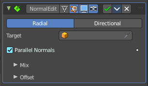
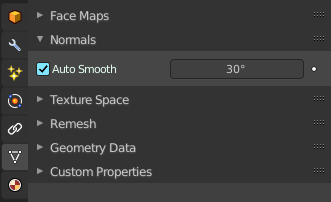
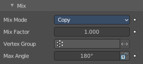
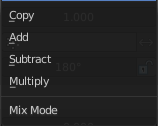
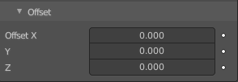
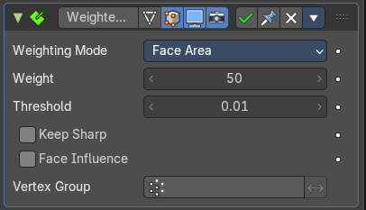
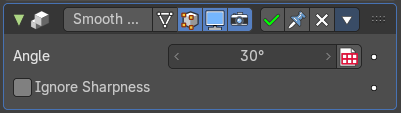

Normal Edit

The Normal Edit modifier affects (or generates) custom normals. It uses a few simple parametric methods to compute them, and mixes back those generated normals with existing ones.

Note: This modifier requires custom normals to be enabled, which can be done by enabling Auto Smooth in the Properties.
Tip. More complex normal manipulations can be achieved by copying normals from one mesh to another, see the Data Transfer Modifier. Some shading effects can also make use of the Weighted Normals modifier.
| Property | What it changes |
|---|---|
| Mode | Radial: Aligns normals with the (origin, vertex_coordinates) vector, in other words all normals seems to radiate from the given center point, as if they were emitted from an ellipsoid surface. · Directional: Makes all normals point (converge) towards a given target object. |
| Target | Uses this object’s origin as reference point when generating normals. A Target object is optional in Radial mode, but mandatory in Directional mode. |
| Parallel Normals | Only relevant in Directional mode. Makes all normals parallel to the line between both objects’ origins, instead of converging towards target’s origin. |
Mix

Mix Mode

How to affect existing normals with newly generated ones.
Note that the Multiply option is not a cross product, but a mere component-by-component multiplication.
| Property | What it changes |
|---|---|
| Mix Factor | How much of the generated normals get mixed into existing ones. |
| Vertex Group | Allows per-item fine control of the mix factor. The vertex group influence can be reverted by using the small “arrow” button to the right. |
Max Angle
Forbids new generated normals to have an angle to the original normal above that given threshold. This is useful to prevent extreme changes, that can even lead to inverting the front/back sides of a face, and consequently to ugly shading artifacts.
Lock Polygon Normals
Prevents flipping (reversing front/back sides) of polygons which normal does not match anymore the side to which point its corners’ custom normals. Can also help avoiding shading issues.
Offset

Gives the origin of the modified object an offset before using it to generate normals.
Offset is only relevant in Radial mode if no Target Object is set, and in Directional mode when Parallel Normals is set.
Weighted Normal

This modifier allows you to change the custom normals of a mesh. This can be useful to make some faces appear very flat during shading, among other effects.
| Property | What it changes |
|---|---|
| Weighting Mode | The normals around a vertex will be combined to create a custom (per face corner) normal using various weights for each. The Weighting Mode defines how to compute the weights. · Face Area: Weight according to the area of the face that the normal originates. A larger area means that the normal from that face will get a higher weight in final result. · Corner Angle: Weight according to the angle each face forms at the vertex. · Face Area and Angle: Weights are obtained by multiplying the face area and corner angle ones. |
| Weight | Determines how strongly the weights are biased according to the face areas and/or corner angles, a bit like a contrast setting for a picture. A value of 50 means all faces are weighted uniformly. More than 50 means faces with higher area or angles are given even more weight (more “contrast”). Less than 50 means faces with higher area or angles are given lesser weights (less “contrast”). |
| Threshold | A weight-rounding threshold which means that, if two angles or areas differ by less than that threshold, they will get equal weights. |
| Keep Sharp | Preserve sharp edges, though smoothing will still happen if there are multiple faces between any two sharp edges. |
| Face Influence | Use face weights as assigned by the Set Strength tool or by the Set Strength mode of a Bevel modifier. For example, if three faces meet at a vertex and have the face weights weak, medium, and strong, then only the normal associated with the strong face will be used to set the final result. |
| Vertex Group | If a vertex group is specified, the modifier will only affect those vertices. · Invert: Invert the selection (only affect the vertices not in the vertex group). |
Smooth by Angle Modifier Asset

This modifier asset is a Geometry Nodegroup that does an “autosmooth” operation on the normals. By default this will consider edges that have been marked as sharp.
| Property | What it changes |
|---|---|
| Angle | The autosmooth angle the smoothing will happen. Any face normal that is less than this amount will contain smooth normal angles. · Input Attribute Toggle: This can also be toggled to set by an attribute set by Geometry Nodes. |
| Ignore Sharpness | This will override the edges that have been marked sharp and smooth the neighboring face normals accordingly. |